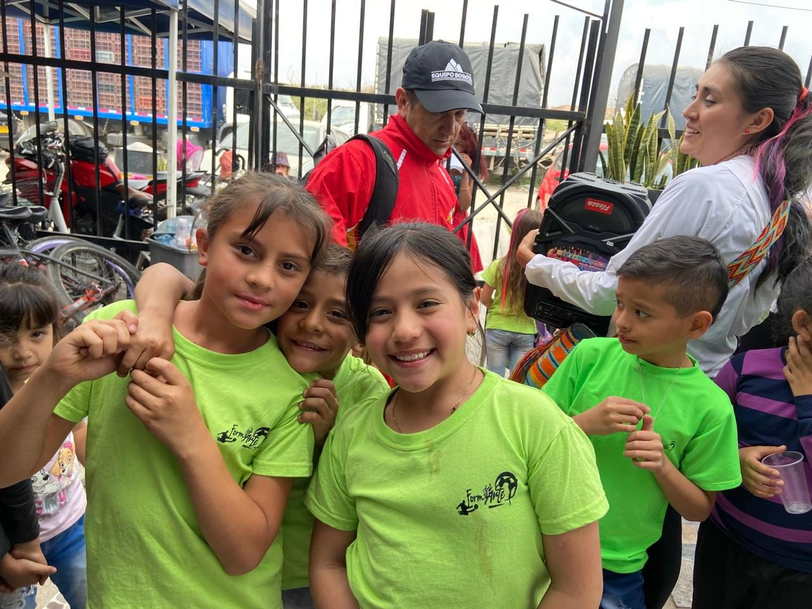
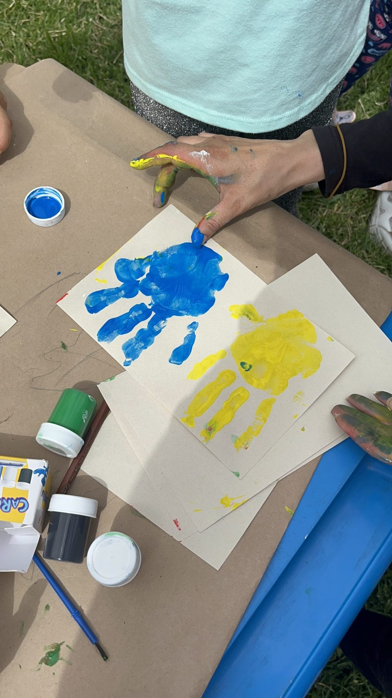
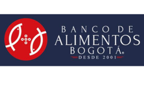
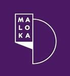
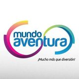
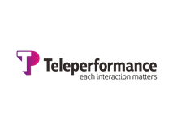
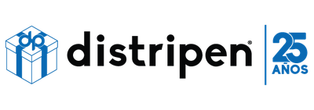
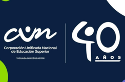
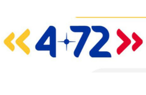
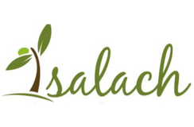

Fundación Un Lugar · Kennedy – Patio Bonito, Bogotá
Un lugar para crecer con salud mental.
Acompañamos a niños, niñas y adolescentes de Patio Bonito, y a sus familias, para prevenir la depresión y el suicidio. Lo hacemos con formación, atención psicosocial y alimentación.
Equivale a $1.500 al día. Pago en línea seguro. monto por confirmar
¿Buscas otra cosa?

Cómo trabajamos
Lo que protege a un niño
Un propósito, alguien que lo escuche y comida en la mesa. Esas tres cosas cuidan la salud mental de un niño, y sobre ellas construimos nuestro trabajo.

-
01 Formación y educación
Un propósito
Cuando un niño no ve un camino hacia adelante, puede sentir desesperanza y vacío. Por eso ofrecemos formación deportiva y artística, y acompañamos a los jóvenes en la construcción de su proyecto de vida.
-
02 Atención psicosocial
Alguien que lo escuche
Sentirse escuchado fortalece las redes de apoyo que protegen la salud mental. Por eso brindamos atención psicológica y social, con seguimiento a cada caso y acompañamiento a la familia.
-
03 Seguridad alimentaria y humanitaria
Comida en la mesa
Cuando falta la comida, crecen las tensiones en casa. Por eso reforzamos cada semana la canasta familiar de los hogares en riesgo alimentario.
Nuestros programas
Seis programas para crecer
Estos seis programas llevan esas tres ideas a la práctica, con los niños y con sus familias.
-

Alimentarte
Alimenta tu cuerpo, nutre tu mente
Lácteos, verduras y proteínas cada semana para familias que ganan hasta un salario mínimo, con capacitación en habilidades para la vida.
Conoce el programa Alimentarte -

Formarte
Formación integral para futuros brillantes
Fútbol, danza y arte cada sábado para desarrollar talentos, hábitos y un proyecto de vida.
Conoce el programa Formarte -

Educarte
Capacitación para familias y jóvenes
Formación para familias, voluntarios y adolescentes en temas psicosociales, prevención del abuso y herramientas para la vida, con apoyo de la tecnología.
Conoce el programa Educarte -

Bienestar infantil
Recreación y bienestar como derecho
Acceso a parques, entretenimiento y espacios culturales, porque jugar y descubrir también cuidan la salud mental.
Conoce el programa Bienestar infantil -

Dignificarte
Dignificación como catalizador del éxito
Artículos para el hogar, brigadas de salud y convenios que mejoran la calidad de vida de las familias.
Conoce el programa Dignificarte -

Tu mente tu aliada
Atención psicológica y social
Atención psicológica y social en salud mental y emocional, para que niños, niñas y adolescentes desarrollen de forma sana su personalidad y su autoestima.
Conoce el programa Tu mente tu aliada
Resultados 2023 cifras por confirmar
Lo que logramos en 2023
Cada cifra es una familia con comida en la mesa, un niño que aprendió algo nuevo o alguien que fue escuchado. Estos son cuatro de los doce resultados que publicamos para 2023.
- Más de 150 familias con seguridad alimentaria 2023
- Más de 165 niños formados 2023
- Más de 190 niños en actividades recreativas y de bienestar 2023
- Más de 15 niños recibieron atención psicosocial 2023
Ver en YouTube (se abre en una pestaña nueva) consentimiento y descripción por confirmar
Historias
En sus propias palabras
María cuenta en este video su experiencia con la fundación. Hay más testimonios en nuestro canal de YouTube (se abre en una pestaña nueva).
Nos acompañan
No lo hacemos solos
Empresas e instituciones que han acompañado nuestro trabajo, y medios que lo han contado. aliados vigentes por confirmar








Reconocimientos
-
Revista Semana
Noticias sobre la fundación en Semana (pestaña nueva) -
Historias Solidarias, Semana Play
Ver el reportaje (pestaña nueva) -
Premio Conquista Social 2024 por confirmar
Ver la publicación en Instagram (pestaña nueva)
Apadrina a un niño
Dale a un niño un lugar donde crecer
Con $45.000 al mes (es decir, $1.500 al día) apoyas la formación, la alimentación y el acompañamiento de tu ahijado. monto por confirmar
Para que tu donación quede registrada a tu nombre, envía el comprobante a donaciones@fundacionunlugar.com.
Así funciona
-
Te inscribes
Llenas el formulario de apadrinamiento y haces tu aporte de $45.000 cada mes.
-
Tu aporte llega a tu ahijado
Se destina a su formación, su alimentación y su acompañamiento.
-
Sigues su camino
Recibes informes de su progreso y te invitamos a los encuentros de padrinos, dos veces al año. informes y encuentros por confirmar
Por su seguridad, tu ahijado sabrá que está apadrinado, pero no quién es su padrino o madrina.
Súmate
Hay un lugar para ti
Ya seas una familia, una persona con tiempo para dar o una empresa, hay una forma de hacer parte de la fundación.
-
Familias
Inscribe a tu hijo o hija
Clases de fútbol, danza y arte los sábados para niños, niñas y adolescentes de 9 a 18 años. Los programas son para familias de la comunidad que acompaña la fundación. horario por confirmar
-
Voluntariado
Sé voluntario
Aporta tu tiempo y tu talento en Patio Bonito. Necesitas ser mayor de edad, tener disponibilidad los fines de semana y contar con seguro médico.
-
Empresas
Patrocina un programa
Con $300.000 al mes tu empresa patrocina uno de nuestros programas y recibe cada trimestre un informe con cifras de impacto. monto por confirmar
Pendientes de confirmación (vista previa)
Cada elemento marcado por confirmar en esta página depende de una suposición de trabajo registrada en septiembre de 2026. Nada se publica hasta que la fundación lo confirme.
- Apadrinamiento: monto de $45.000 al mes ($1.500 al día), qué cubre, qué informes recibe el padrino (la página actual dice cada tres y cada cuatro meses), los encuentros de padrinos (dos al año) y la regla de seguridad (el ahijado sabe que está apadrinado, pero no quién es su padrino).
- Patrocinio empresarial: monto de $300.000 al mes ($9.990 al día) e informe trimestral.
- Resultados 2023: las cuatro cifras mostradas (y las doce publicadas en «Efecto»); si existen cifras de 2024 o 2025.
- Aliados: que los nueve logos correspondan a alianzas vigentes y autorizadas. Excluidos hasta confirmar: iglesias, grupos scout y explorador, #ReinaElCorazón, StarsKids y la tarjeta personal de un abogado.
- Horario de clases: sábados, 9 a 18 años, y el periodo vigente (la página actual dice «1er semestre 2025»). Destinatario del formulario de inscripción (Google Forms).
- Consentimiento de imagen: ninguna fotografía de niños tiene consentimiento registrado: foto principal (jornada del 2 de agosto de 2024), los seis programas (imágenes 1-3, 7, 2-3, 12, IMG_3815 y otra foto de la misma jornada). La foto de Alimentarte es un retrato cercano; conviene reemplazarla por una foto de actividad.
- Video testimonial: consentimiento de las personas que aparecen, descripción correcta de la historia de María y de Miguel, y un fotograma en alta resolución (la portada actual mide 487 × 272 px).
- Premio Conquista Social 2024: qué reconoce y quién lo otorga.
- Identidad legal: nombre registrado exacto, NIT y dirección registrada; textos de términos y condiciones y tratamiento de datos.
- Contacto: que los dos números de WhatsApp estén atendidos y que los dos correos institucionales sean los públicos.
- Documentos: si existen un informe de gestión y un certificado de trayectoria más recientes que 2022 y 2024.
- Pasarela de pagos: el texto dice «pago en línea seguro» sin nombrar proveedor (la página actual mezcla Wompi y PaymentsWay).
- Programas: las descripciones vienen de las páginas de cada programa (2024); confirmar que siguen vigentes, en especial las entregas semanales de Alimentarte y las clases de los sábados.
- Línea 106 y 123: el líder psicosocial aprueba el texto sobre salud mental y la línea de ayuda, y los números se vuelven a verificar antes de publicar (fuente: Secretaría Distrital de Salud de Bogotá, consultada el 24 de septiembre de 2026).